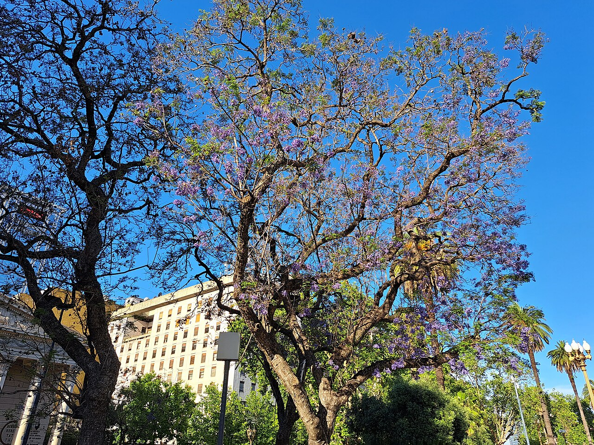
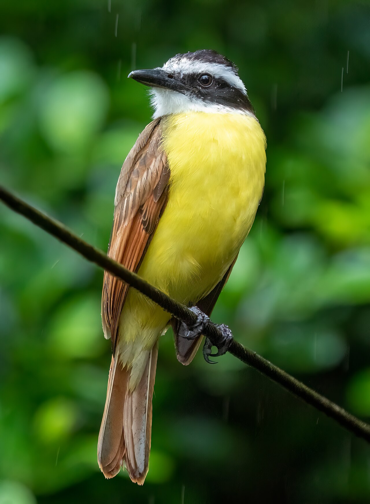

Lula.
diario de la mañana — el mundo, tu ciudad y lo que te asombra

Buen día, Lula. Feriado: el Día de la Soberanía se corrió al lunes, así que hoy es el tercer día del fin de semana largo. Y arranca caluroso: 31°, sin lluvia, y una semana que va a seguir subiendo. Hoy te llevo dos cosas: la COP31 cerró sin acuerdo general, algo que no había pasado nunca así, y un hallazgo de envejecimiento que separa dos cosas que creíamos pegadas. Te pido perdón por la hora: hoy salí tarde.
- El mundo en cinco minutos3'
- Argentina y Buenos Aires2'
- Ciencia: envejecer sin inflamarse5'
- Mirá a tu alrededor2'
- Receta de estación2'
- La palabra del día1'
- Le français du matin2'
- English corner3'
- Lunes de arte: Berni4'
- Hoy en la historia · un lugar2'
- Lo que me asombra hoy1'
- Pasatiempo: sudoku fácil10'
- Cuaderno: repaso, quiz y escritura4'
La COP31 cerró sin acuerdo general: no hay «Pacto de Antalya»
La cumbre climática de Naciones Unidas en Antalya, Turquía, terminó el fin de semana —con horas de descuento sobre el cierre previsto— sin el documento central que se estaba negociando. No hubo decisión política general: la presidencia turca no logró un texto que pasara el consenso, y la cumbre quedó, por primera vez de esta manera, sin ninguna referencia a los combustibles fósiles en su resultado principal. La Unión Europea rechazó el borrador final por considerarlo demasiado débil; otros países lo rechazaron por lo contrario, por exigirles más de lo que estaban dispuestos a firmar.
Algunos números para ubicarlo: la cumbre cerró el domingo 22, más de 50 horas después de la hora prevista —es la COP más larga de la historia—, y es la primera vez desde Copenhague, en 2009, que una cumbre climática termina sin su acuerdo político central. El presidente de la COP31, Murat Kurum, reconoció al final que no habría acuerdo oficial porque varios países objetaban el texto.
Conviene no leerlo como «no se acordó nada»: sí salieron decisiones de las mesas técnicas, entre ellas el paquete de adaptación y la continuidad del programa de trabajo sobre transición justa. Lo que no salió es la parte que ordena a todas las demás: la declaración que fija el nivel de ambición y el lenguaje sobre fósiles. Un borrador temprano hablaba de una «transición inmediata para abandonar los combustibles fósiles»; las menciones se fueron cayendo versión por versión, y el texto final no nombraba ni petróleo, ni gas, ni carbón.
Las reacciones marcan el tono del año que viene. António Guterres se declaró «profundamente decepcionado». La delegación china se mostró desilusionada pero insistió en defender el multilateralismo —es decir: el problema fue esta cumbre, no el método—. Y queda una discusión incómoda sobre el formato: cumbres de 200 países con regla de consenso, donde un puñado de delegaciones puede vaciar el texto sin bloquearlo formalmente.
Para leerlo bien
Las fuentes no coinciden en algunos detalles: cuántas horas exactas de descuento hubo —se habla de 44 y también de más de 50— y qué pasó con el financiamiento de adaptación, porque algunas reportan que el borrador final dejó caer una meta de 120.000 millones de dólares. Lo sustantivo, en cambio, es consistente en todas: no hubo decisión política general y no hubo mención a combustibles fósiles.
El feriado que no cae el día que conmemora
Hoy es feriado nacional por el Día de la Soberanía Nacional, que recuerda la Vuelta de Obligado del 20 de noviembre de 1845 —de eso hablamos el viernes—. La fecha es trasladable, y este año se corrió al lunes para armar fin de semana largo. Es el último feriado antes de diciembre: el próximo es el 8 de diciembre.
Del lado del clima, la semana entra en modo verano antes del verano: hoy 31°, y el Servicio Meteorológico Nacional anticipa una semana calurosa con máximas que pueden llegar a 34° en el conurbano. Si estudiás de tarde, conviene mover el bloque pesado a la mañana: por arriba de 30° el rendimiento en tareas de atención sostenida cae, y no es sugestión.
Una enzima que envejece los órganos sin encender la inflamación
Hay una idea muy instalada en biología del envejecimiento: que envejecer es, en el fondo, inflamarse de a poco. Se le puso nombre y todo, inflammaging: un estado inflamatorio crónico y de bajo grado que sube con los años y que vendría a explicar el deterioro de casi todos los órganos. Un trabajo de la Universidad Monash (Australia), que Nature cubrió el 12 de noviembre, mete una cuña en esa idea.
Primero, el anclaje: qué es una granzima
Las granzimas son proteasas —enzimas que cortan otras proteínas— que viven guardadas en gránulos dentro de los linfocitos T citotóxicos y las células NK, las dos poblaciones que matan células infectadas o tumorales. El mecanismo clásico: la célula asesina abre un poro en la célula blanco con perforina y por ahí inyecta granzimas, que cortan proteínas internas y disparan la apoptosis. La más estudiada es la granzima B. La de este trabajo es la granzima K, y tiene una particularidad: en humanos aparece fuera de las células, circulando en el plasma y acumulándose en tejidos inflamados, lo que hace pensar que su rol principal no es matar células una por una sino actuar sobre el entorno.
Lo que hicieron los investigadores fue sacarle a ratones el gen de la granzima K y dejarlos envejecer. Los ratones viejos sin granzima K llegaron a la vejez con mejor función cardíaca y hepática y menos daño renal que sus pares normales. Es decir: la enzima no es un espectador del envejecimiento de los órganos, parece ser parte del motor.
Y acá viene la parte que da vuelta el marco. Esos mismos ratones envejecieron inmunológicamente igual: su sistema inmune se deterioró con la edad como el de cualquier ratón viejo, y la defensa contra infecciones quedó intacta. O sea que el envejecimiento de los órganos y el envejecimiento del sistema inmune —que la hipótesis del inflammaging trata como dos caras de lo mismo— se pueden separar. Se puede tocar uno sin tocar el otro.
Qué no dice el trabajo
Tres frenos, y los pone el propio equipo. Uno: esto es en ratón, y el papel causal de la granzima K en el envejecimiento de órganos humanos no está demostrado. Dos: «hay un fármaco» no es un resultado del estudio, es una esperanza derivada —que una proteasa sea inhibible en principio no significa que inhibirla en una persona durante décadas sea seguro ni útil—. Tres: un knock-out de línea germinal saca la proteína desde el embrión, así que no distingue entre «la granzima K daña los órganos del viejo» y «la granzima K dejó algo mal armado desde el principio». Eso se contesta con inhibición en el animal ya adulto, y es el experimento que falta.
Biotec argentina · IBR, Rosario
Si este tipo de trabajo te interesa —proteínas, proteasas, estructura—, el lugar natural en el país es el IBR, Instituto de Biología Molecular y Celular de Rosario, de doble dependencia CONICET-UNR. Tiene cuatro áreas grandes: biología molecular de plantas, biología estructural, biomedicina y microbiología, y dentro de ellas líneas que suenan directamente a esta nota: «estructura, plegamiento y función de proteínas», biología del ARN, patogénesis bacteriana, oncología molecular, virus oncogénicos, y biología y bioquímica de Trypanosoma cruzi. Hay además una plataforma de biotecnología acuática. Para una tesis de licenciatura o un doctorado en biotec con pata molecular fuerte, es de los institutos a mirar.
El jacarandá, que esta semana está en su pico, y el benteveo
El árbol: jacarandá
Jacaranda mimosifolia. No es porteño de origen: es del noroeste argentino y del sur de Bolivia, y llegó a la ciudad con Carlos Thays, el paisajista que armó el arbolado de Buenos Aires a fines del siglo XIX. Florece ahora, en noviembre, y lo hace con una secuencia que vale mirar: primero pierde casi toda la hoja, después florece sobre la rama desnuda, y recién al final saca la hoja nueva. Por eso el azul se ve tan limpio —no hay verde que lo interrumpa— y por eso la vereda se cubre de flores enteras y no de pétalos.
La hoja es bipinnada: la hoja entera está dividida en foliolos, y cada foliolo está dividido otra vez, como la de la mimosa (de ahí el mimosifolia). La flor es un tubo de unos 4-5 cm, y ese tubo es un filtro: solo entra un polinizador del tamaño adecuado, abejas sobre todo, que al meterse quedan obligadas a rozar los estambres. El fruto es una cápsula leñosa, chata y redonda, que se abre en dos valvas y hace un ruido de castañuela cuando la pisás seca.
El ave: benteveo

Pitangus sulphuratus. El del grito que ya conocés sin saber el nombre. Es un tiránido —la familia de los atrapamoscas americanos— pero con una dieta rarísima para el grupo: come insectos, sí, pero también frutas, lagartijas, pichones de otras aves y pesca, zambulléndose de panza en el agua como un martín pescador torpe. Esa amplitud es la razón de que esté en todas partes, de México a la Patagonia, y de que le vaya bien en la ciudad.
Dos cosas para buscarle. Una: entre la corona negra tiene un penacho amarillo oculto, que levanta solo en despliegue agresivo o de cortejo; si lo ves, estás viendo una discusión. Dos: el nido no es la tacita prolija que uno espera, es una bola grande y desordenada de pasto y fibras con la entrada al costado y techo propio —raro entre los tiránidos—, generalmente a buena altura. Y si ves un benteveo persiguiendo a un gavilán tres veces más grande, es exactamente lo que parece: mobbing, el acoso coordinado con el que las aves chicas expulsan a un predador de su territorio.
Tabule, que no se cocina
Para dos, de almuerzo, y mejor si lo hacés un rato antes. Una taza de trigo burgol (fino), dos tomates grandes, un atado grande de perejil, un puñado de menta, media cebolla morada, el jugo de un limón y medio, aceite de oliva, sal.
Cubrí el burgol con agua fría hasta un dedo por encima y dejalo veinte minutos: no va al fuego. Mientras, cortá los tomates en cubitos chicos, salalos y dejalos en un colador sobre un bol. Picá el perejil y la menta a cuchillo y bien finito, y la cebolla en pluma fina. Escurrí el burgol apretándolo con la mano, mezclá todo, agregá el jugo de limón, el aceite y sal, y dejalo reposar media hora en la heladera antes de comer.
La química de la receta
Por qué no se cocina: el burgol es trigo precocido al vapor y después secado y partido. En ese vapor los gránulos de almidón ya gelatinizaron —absorbieron agua y perdieron su estructura cristalina— y al secarse quedaron fijados así, porosos. Hidratarlo es solo devolverle el agua que le sacaron, y eso pasa en frío. Si lo hirvieras, el almidón ya gelatinizado seguiría absorbiendo hasta reventar el grano: pasta.
Por qué salar el tomate aparte: la sal crea un gradiente osmótico y el agua sale de la célula del tomate hacia afuera. Si salás todo junto, esa agua termina en el burgol, que ya no la necesita, y el tabule queda aguado. Escurrida antes, te queda el tomate más concentrado de sabor y el grano suelto.
Por qué a cuchillo y no procesadora: la hoja de perejil tiene las células cargadas de clorofila y de aceites esenciales. Un corte limpio abre pocas células; el golpeteo de la procesadora rompe muchas y libera enzimas que, en medio ácido, convierten la clorofila en feofitina —se le va el magnesio del centro— y el verde pasa a verde oliva apagado. Además pierde el perfume en el primer minuto.
jacarandá sustantivo
tupí-guaraní yacarandá («el de madera dura», o «madera fragante») → portugués de Brasil jacarandá → castellano jacarandá · inglés jacaranda
Es una de las poquísimas palabras que el castellano le tomó a las lenguas tupí-guaraníes y que después viajó al mundo entero. Entró por el portugués de Brasil, donde nombraba maderas duras y oscuras —en Brasil «jacarandá» sigue siendo, sobre todo, una madera de ebanistería, no esta flor azul—, y de ahí pasó al castellano y al inglés como nombre del árbol.
Dos cosas lindas de la palabra. Una: en Argentina se dice jacarandá, con acento al final, como en portugués; en España y en buena parte de América se dice jacaranda, grave. Las dos están aceptadas. Dos: por el mismo camino tupí-guaraní nos llegaron «ananá», «tapioca», «tucán», «petunia» y «maraca». Casi todo lo que el castellano nombra con esas palabras son cosas que no existían en Europa y que no tenían cómo llamar.
Je voudrais…
— Bonjour, vous avez choisi ?
— Oui, je voudrais une salade, s'il vous plaît.
— Et comme boisson ?
— De l'eau, merci. Et l'addition après, s'il vous plaît.
| je voudrais | querría, me gustaría [ye vu-DRE] |
|---|---|
| comme boisson | para tomar (lit. «como bebida») [com bua-SON] |
| de l'eau | agua [de LO] |
| l'addition | la cuenta [la-di-SION] |
Un truco
Nunca pidas con je veux. Gramaticalmente es «quiero» y está perfecto, pero en francés suena a chico caprichoso: hay un refrán escolar, «je veux» n'est pas français. Lo que se usa es je voudrais, que es el condicional de vouloir y funciona como nuestro «querría» o «me gustaría». Es la forma de pedir en todos los contextos: un café, una entrada, un turno. Y la otra pieza que te salva es l'addition, s'il vous plaît: en Francia la cuenta no se trae sola, hay que pedirla, y esperar sentada a que aparezca puede ser muy largo.
Made of what was thrown away
There is a long tradition of painters who build their pictures out of scrap: flattened tins, offcuts of cloth, broken toys salvaged from the edges of a city. The gesture is rarely sentimental. Using the material of poverty to depict poverty closes a gap that paint alone leaves open.
The risk is obvious enough. Work of this kind can slide into picturesque squalor, inviting the viewer to admire a hardship they will never share, and critics have been quick to say so. The better answer is not to deny the risk but to notice who is looking: the artists who survive the charge tend to be those whose subjects are rendered with dignity rather than pity.
What endures, in any case, is the texture. A tin lid stands in for a tin lid; nothing is translated. Half a century on, the surface still carries the dust of the place it came from, and no amount of restoration will take that out of it.
- scrap — descarte, chatarra
- an offcut — un recorte sobrante
- to salvage — rescatar, recuperar
- to close a gap — cerrar una brecha
- to slide into — derivar en, caer en
- squalor — miseria, sordidez
- to stand in for — hacer de, sustituir a
- half a century on — medio siglo después
Berni: el premio de Venecia que ganó con chatarra
Antonio Berni (1905-1981) venía de la pintura social, de los grandes murales y de los cuadros de desocupados de los años treinta. A fines de los cincuenta hizo algo que no se esperaba de un pintor consagrado: se puso a armar imágenes con basura. Chapa oxidada, latas aplastadas, retazos de tela rota, tapitas, juguetes partidos, restos industriales juntados en los márgenes de las ciudades. Con eso construyó a Juanito Laguna, un chico de villa que no es un retrato de nadie en particular sino un personaje, y que aparece una y otra vez durante veinte años.
Lo decisivo es que el material no ilustra el tema: es el tema. La chapa que forma la pared del rancho de Juanito es una chapa de verdad, sacada de un rancho de verdad. En 1962 Berni llevó esas obras a la Bienal de Venecia y ganó el Gran Premio de grabado —el primer argentino en recibirlo—, con unas piezas que él llamaba xilo-collage y xilo-collage-relieve.
| Qué es un xilo-collage-relieve | Una xilografía es un grabado hecho con una matriz de madera tallada: se entinta la madera y se imprime. Berni rompió la regla: en vez de tallar una plancha lisa, pegaba objetos sobre la madera —encaje, chapa, cartón, tela— y después entintaba y estampaba ese relieve. Lo que queda impreso en el papel es la huella de los objetos. De ahí el nombre: xilo (madera) + collage + relieve. |
|---|---|
| Con el premio | Alquiló un taller en París, y ahí desarrolló al otro gran personaje: Ramona Montiel, una costurera que se convierte en prostituta. Juanito es la pobreza del conurbano; Ramona es la ciudad y el deseo. Berni los trató como dos series paralelas, no como una secuencia. |
Ojo con un dato que circula mal: hay fuentes que atribuyen el Gran Premio de 1962 a las obras de Ramona. La atribución mejor documentada es a las de Juanito Laguna; Ramona se desarrolla después del premio, en el taller que el premio pagó.
Dónde verlo: el MNBA (Libertador 1473) tiene obra de Berni en su colección permanente, y el MALBA (Figueroa Alcorta 3415) también. Entrada con descuento para estudiantes en los dos. Si vas, parate a 30 cm de un Juanito: desde lejos es una imagen, desde cerca es un inventario de objetos.
23 de noviembre de 1963: sale al aire el primer Doctor Who
La BBC estrenó esa tarde un programa infantil pensado para el hueco entre el fútbol y el show de la noche: un viejo excéntrico con una cabina de policía azul que viaja en el tiempo. Se llamaba Doctor Who, el primer episodio fue «An Unearthly Child» y el protagonista era William Hartnell. Salió con mala suerte: el día anterior habían asesinado a Kennedy, el país estaba en otra cosa y encima hubo un corte de luz que afectó la transmisión. La BBC lo repitió la semana siguiente, pegado al segundo episodio. Hoy es la serie de ciencia ficción más larga de la televisión.
Lo que más vale la pena de esa fecha, igual, es la cortina musical. La escribió Ron Grainer, pero la que la hizo sonar fue Delia Derbyshire, en el Radiophonic Workshop de la BBC, y la hizo sin sintetizadores —no existían disponibles—. Generó cada nota con osciladores de laboratorio, la grabó en cinta, cortó la cinta nota por nota con tijera y hoja de afeitar, y empalmó todo a mano, ajustando la altura de cada sonido cambiando la velocidad de reproducción. El resultado fue una de las primeras cortinas electrónicas de la televisión, y sonaba a futuro porque no se parecía a ningún instrumento.
El lugar: Lime Grove, Shepherd's Bush, Londres
Dibujá el mapa: oeste de Londres, barrio de Shepherd's Bush. Los Lime Grove Studios eran unos estudios de cine comprados por la BBC en 1949, viejos y chicos, donde se grabaron los primeros episodios en el Estudio D. Los demolieron en 1993. A unas cuadras está el Television Centre, el edificio circular que fue la casa de la BBC durante décadas, y al lado, el Radiophonic Workshop: dos piezas en un sótano donde se inventó buena parte del sonido electrónico británico.
El cerebro no siente dolor
El tejido cerebral no tiene nociceptores: no tiene las terminales nerviosas libres que detectan daño y que están en la piel, el músculo, el hueso, la córnea, casi todo. Se lo puede cortar, cauterizar y estimular sin que duela. De eso vive la craneotomía con el paciente despierto: se anestesian el cuero cabelludo, el hueso y las meninges —esas sí duelen—, y una vez abierto el cráneo la persona queda consciente, hablando, nombrando dibujos o moviendo la mano, mientras el cirujano estimula la corteza con un electrodo para encontrar qué área puede sacar y cuál no. Es la única manera de mapear el lenguaje: no hay dos cerebros con el lenguaje en el mismo lugar exacto.
Y de ahí sale la pregunta linda: si el cerebro no duele, ¿qué duele en un dolor de cabeza? Las meninges —sobre todo la duramadre—, los vasos sanguíneos grandes y los músculos y el periostio de alrededor, todos ricamente inervados por el trigémino. El cerebro es el órgano que construye todos los dolores del cuerpo y es el único que no puede sentir el propio.
El del feriado
Repaso y quiz de la mañana
Repaso de idiomas
Quiz
Una granzima es…
Lo que da vuelta el marco en el trabajo de granzima K es que los ratones sin la enzima…
La limitación más fuerte de un knock-out de línea germinal para esta pregunta es que…
El burgol se hidrata en frío porque…
El jacarandá se ve tan azul porque…
En una craneotomía con paciente despierto se anestesia…
Escritura
- Quiz: una proteasa de gránulos · mejores órganos con inmunidad envejecida igual · saca la proteína desde el embrión · trigo precocido, almidón ya gelatinizado · florece sobre la rama desnuda · cuero cabelludo, hueso y meninges.
- Repaso: je voudrais un café · comme boisson · l'addition, s'il vous plaît · rescatar o recuperar · hacer de, sustituir a · un recorte sobrante.
- Francés: «Je voudrais un café, s'il vous plaît. Et de l'eau. … L'addition, s'il vous plaît.»
Sudoku:
Fuentes de esta edición
- COP31: NPR: el cierre del domingo · ABC News: sin el acuerdo central · Euronews: las cumbres que terminaron sin acuerdo
- Clima y feriado: Cadena 3, con datos del SMN · Perfil: la semana veraniega
- Ciencia: Nature: una proteína que envejece sin inflamar (Monash University) · IBR (CONICET-UNR): líneas de investigación
- Arte e historia: MNBA · MALBA · BBC: Doctor Who
Mañana, martes: moda, y volvemos al horario. — Lula.